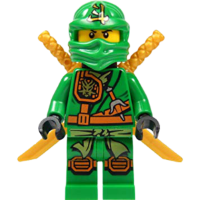
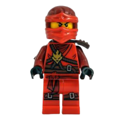
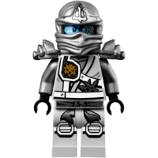

Personajes
|  | Lloyd Garmadon |
| Es el Ninja Verde, máximo maestro del Spinjitzu, el primer y único Maestro Elemental de la Energía, y actualmente el lider de los Ninjas. El es el hijo de Garmadon y Misako, el sobrino de Wu, y el nieto del Primer Maestro Spinjitzu. | |
|  | Jay Walker |
| Jay es el ninja del rayo, un inventor talentoso con un loco sentido del humor, amistoso, aunque a veces es capaz de resistir una gran tortura por sus amigos, está perdidamente enamorado de Nya. Le encanta la tecnología de punta que hoy lo rodea, aunque sus esfuerzos por desmontarla y averiguar cómo funciona han provocado ya un par de explosiones. | |
|  | Zane |
| (También conocido como Ninja de Hielo y Rosita llamado así por Cole solo por tiempo limitado porque Lloyd lavo su ropa con la de Kai y quedo de color Rosa o Ninja Blanco). es uno de los protagonistas principales de la serie Ninjago. |